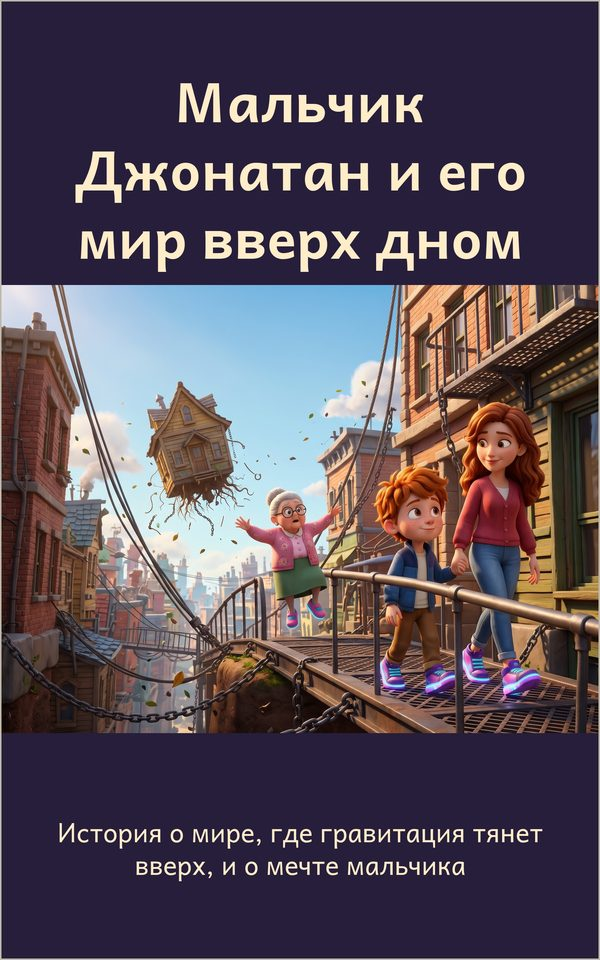

Мальчик Джонатан и его мир вверх дном
История о мире, где гравитация тянет вверх, и о мечте мальчика
Продажа электронной книги скоро откроется
В мире Джонатана всё наоборот: гравитация тянет людей не вниз, а вверх. Чтобы не улететь в небо, все носят магнитную обувь и ходят по железным дорожкам. Однажды Джонатан увидел, как улетает целый дом, и задумался: каким был бы мир, где всё падает вниз? Необычная история о мечте, осторожности и привычке к странному миру.